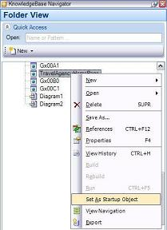
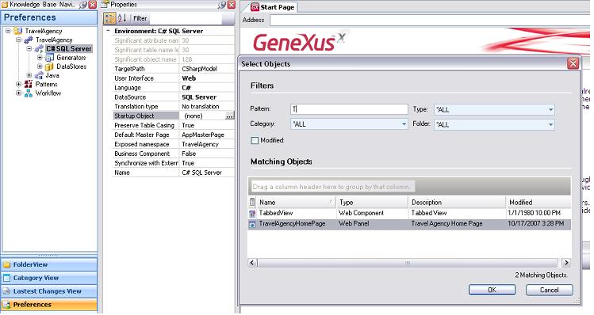
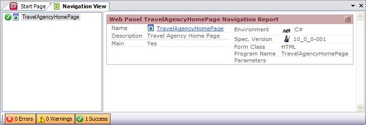

There are two ways of applying this feature to any object that allows it. The first is accessing the object's context menu and selecting Set As Startup Object, as shown in the figure below:

The other is accessing the Preferences panel of the Knowledge Base Navigator container and clicking the Startup Object property at environment level. Then, as you start entering the object's name (it can be Main Object), a list of available names will appear. You can also click the Search button on the right to open the available objects window, as shown in the figure below.

Note that in the previous figure the TravelAgencyHome Web Panel was selected. You don't need to set the value of the Main property to True, as simply by setting it as Startup Object, GeneXus will automatically set the property.
In the following figure, note the Navigation Report that results after pressing F5; that is, which object is the only one specified and later executed if everything is correct.

See also Startup Object and Unsetting a Startup Object.
| Backlinks | ||
| Build/Rebuild/Run | Build/Run With This Only | Toc:GeneXus - Table of contents |
| My first Android application | Startup Object | |
| Unsetting a Startup Object |